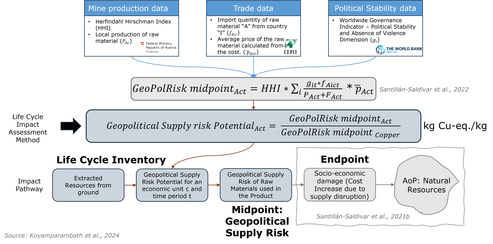

Background¶
The GeoPolRisk Method¶
The GeoPolRisk method was developed to quantify the supply risk of raw materials within a product to a country, region, or group of countries. It was proposed to complement Life Cycle Assessment (LCA) in the form of a midpoint characterization factor (CF) for Life Cycle Sustainability Assessment (LCSA).
The method quantifies supply risk as a function of the global production concentration of the raw material and the trade partner’s import shares weighted by their political instability. The production concentration is evaluated with the normalized Herfindahl-Hirschman Index (HHI) (from 0 to 1) for raw material extraction or processing, and the political instability is estimated using the Worldwide Governance Indicators.
Since its inception, the method has evolved, incorporating several dimensions of resource criticality.
History of GeoPolRisk Method at a Glance¶
Publication |
Contribution |
|---|---|
Sonnemann et al. (2015) [13] |
|
Gemechu et al. (2015) [4] |
|
Gemechu et al. (2016) [5] |
|
Helbig et al. (2016) [6] |
|
Cimprich et al. (2017a) [1] |
|
Cimprich et al. (2017b) [2] |
|
Cimprich et al. (2019) [3] |
|
Santillán-Saldivar et al. (2020) [10] |
|
Santillán-Saldivar et al. (2021) [11] |
|
Koyamparambath et al. (2022) [7] |
|
Santillán-Saldivar et al. (2022) [12] |
|
Koyamparambath et al. (2024) [9] |
|
The Values of the GeoPolRisk Method¶
A country, region, trade block, or company is represented as an economic unit. The formula for determining the probability of supply risk attributed to geopolitical factors, commonly referred to as the “GeoPolRisk Score,” for a specific material “A” is outlined in Equation 1, taking into account the perspective of the economic unit “c” during a given year. The formula can be interpreted as a composite of two contributing factors: the global production concentration and the import dependency of the metal or mineral.
Equation 1: Equation to calculate the GeoPolRisk Score
Where: - \(\text{HHI}_A\) = Herfindahl-Hirschman Index for commodity A - \(g_i\) = Geopolitical (in)stability of economic unit i - \(f_{Aic}\) = Imports of commodity A from country i to economic unit c - \(F_{Ac}\) = Total imports of commodity A to economic unit c - \(p_{Ac}\) = Domestic production of commodity A in economic unit c
The subsequent study introduced a substitutability indicator as a vulnerability to supply risk factor to the GeoPolRisk method. Domestic recycling of resources was also identified as a risk mitigation factor and was included in the method by reduction and redistribution of the import share.
To integrate the method into LCSA, a connection to the functional unit is necessary. A characterization model of the GeoPolRisk method based on the defined cause-effect mechanism was developed to complement environmental LCA. A new characterization model and a modified midpoint indicator were developed to address the identified methodological gaps. The complete equation for the GeoPolRisk midpoint CF of a resource “A” from the perspective of a country “c” in a given year is shown in Equation 2:
Equation 2: The midpoint characterization factor for the GeoPolRisk method
\(\text{HHI}_A\) is the Herfindahl-Hirschman Index for resource A, calculated as the sum of the squared production shares of all the countries producing resource A. The GeoPolRisk method weights the import (\(f_{Aic}\)) of resource A to country c from i with the political (in)stability indicator of the exporting country (\(g_i\)). \(F_{Ac}\) is the total imports to the entity in assessment, and \(p_{Ac}\) is the domestic production of resource A in entity c.
The CF is called Geopolitical Supply Risk Potential (GSP) and is used to evaluate the Geopolitical Supply Risk (GSR) of raw materials consumed in a product/product system. The values for the GSP are obtained by dividing the GeoPolRisk midpoint for a given raw material by the respective GeoPolRisk midpoint of copper for the same economic unit and time period, as shown in Equation 3. Here, “A” represents the raw material, “c” represents an economic unit, and “t” refers to the time period (year). At the midpoint level, the indicator seeks to quantify “the risk of relative potential accessibility issues for a product system related to short-term geopolitical and socio-economic aspects.” As an import-based indicator, using the characterization model, the CFs represent the supply risk of a raw material equivalent to the supply risk of importing one kilogram of copper to an economic unit at a given time period. This provides a way to compare the GSR for different processes or product systems using a common reference.
Equation 3: The GeoPolRisk characterization model to calculate the Geopolitical Supply Risk Potential
The characterization model uses trade data from a comprehensive disaggregated database for bilateral trade flows known as the Database for International Trade Analysis (BACI). The traded price is calculated using the “free on board value,” a mechanism commonly used in international trade that considers the cost, insurance, and freight of a product being transported from the seller to the buyer. Global mine production data were obtained from the World Mining Data - 2021 report published by the Austrian Federal Ministry of Finance.
{kind=link}
Application of the Method¶
Mapping the CFs of the GeoPolRisk method to LCI elementary flows presents a challenge primarily arising from the inherent nature of supply risk associated with the traded commodity. Within the context of LCA, the traded commodity refers to the intermediate flow obtained from a mining activity. LCA characterizes the impacts associated with elementary flows, encompassing inputs and outputs. Consequently, applying CFs directly to intermediate flows becomes impractical, as they cannot be automatically traced unless unit processes are considered.
To address this limitation, we assume that, in mining activities in ecoinvent, the elementary input flow of the mineral extracted from the ground is in the same range as the intermediate output flow of the mineral being produced. This assumption is true for most of the mining activities in ecoinvent, except for activities where mineral processing waste is high and mining activities where elementary flows are allocated to co-products having different economic values. This assumption enables the application of CFs to elementary rather than intermediate flows, rendering the GeoPolRisk method feasible in this context.
The GeoPolRisk method takes on the perspective of an economic unit and time period while calculating the CFs for raw materials. Ideally, the geographic location of the elementary flow where the activity occurs is utilized to apply the corresponding CF and calculate the GSR of the product system. However, within the ecoinvent processes, activities involve a combination of flows originating from various geographical locations, and to address this challenge, a potential solution is to assume that all activities occur within a specific geographic location, except for mining activities, and apply the specific CFs to all elementary flows.
Nevertheless, the supply risk associated with the primary product is inherently linked to the location of its manufacturing. This is because there’s an assumption that the supply risk linked to intermediate products is at least equal to, if not greater than, the supply risk of the raw materials required for producing the intermediate product in the same location where the primary product is made.
Glossary of Terms¶
Abbreviation |
Meaning |
|---|---|
GeoPolRisk |
Geopolitically related supply risk method |
GeoPolRisk Score |
A non-dimensional supply risk value useful for comparative risk assessment |
GSP |
Geopolitical Supply Risk Potential – the characterization factor used in Life Cycle Assessment, expressed as kg Cu-eq. per kg |
GSR |
Geopolitical Supply Risk – the midpoint impact calculated using the GSP |
HHI |
Herfindahl-Hirschman Index – indicator for concentration of production of a raw material (normalized to the range 0–1) |
LCA |
Life Cycle Assessment – methodology to assess environmental impacts associated with all the stages of a product’s life |
LCSA |
Life Cycle Sustainability Assessment – integrated framework combining LCA, life cycle costing, and social LCA |